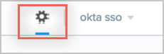
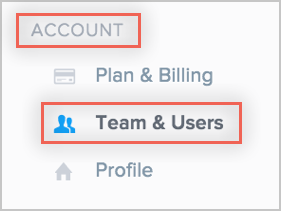
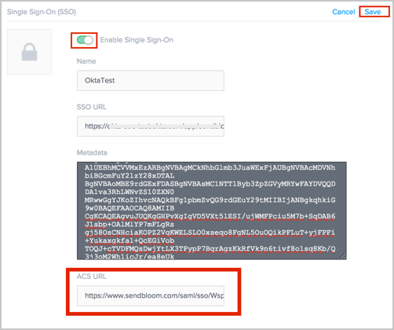
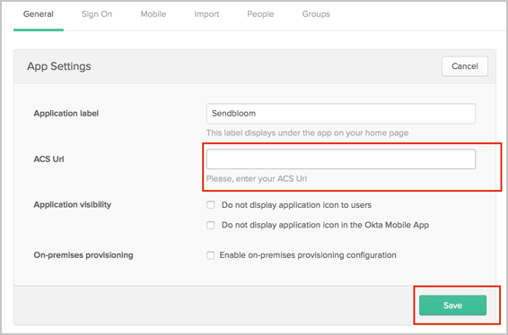

Login to SendBloom as a team lead, here: https://www.sendbloom.com/
Click the gear icon in the top right corner to go to the Settings page:

In the left side menu on the Settings page, under Account select Teams & Users:

Locate Single Sign-On (SSO) and click on the blue Edit text on the right side.
Do the following:
Click the Enable Single Sign-On button. More fields will appear.
SSO URL: Copy and paste the following:
Sign into the Okta Admin Dashboard to generate this variable.
Metadata: Copy and paste the following:
Sign in to Okta Admin app to have this variable generated for you.
ACS URL: Make a copy of this value, you will need to enter it in Okta later.
Click Save.

In Okta, select the General tab for the SendBloom app, then click Edit.
Enter the value you copied from SendBloom into the ACS Url field.
Click Save.

Click Save.
Notes:
IDP-initiated flows are supported.
SP-initiated flows and Just In Time (JIT) provisioning are supported for non-team lead accounts.